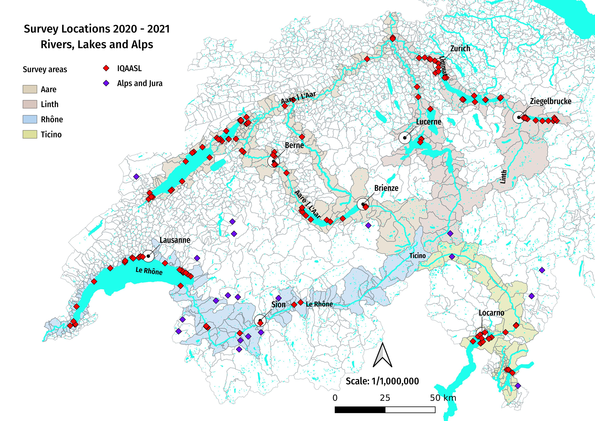

11. Identification, quantification and Analysis of Observable Anthropogenic Litter Along Swiss Freshwater Systems¶
Edition 1 ver=1d
Map of survey locations April 2020 - July 2021
{kind=link}
Biel/Bienne 31/12/2021
Im Auftrag des Bundesamtes für Umwelt (BAFU)
Sur mandat de l ́Office fédéral de l ́environnement (OFEV)
Su mandato dell ́Ufficio federale dell ́ambiente (UFAM)
Commissioned by the Federal Office for the Environment (FOEN)
11.1. Impressum¶
Auftraggeber: Bundesamt für Umwelt (BAFU), Abt. Abfall und Rohstoffe, CH-3003 Bern Das BAFU ist ein Amt des Eidg. Departements für Umwelt, Verkehr, Energie und Kommunikation (UVEK).
Auftragnehmer: Hammerdirt Brüggstrasse 39 2503 Biel/Bienne Switzerland +41 76 699 06 16 info@hammerdirt.ch
Die Autoren: Roger Erismann, Shannon Erismann
Begleitung BAFU: Rita Barros
Hinweis: Diese Bericht wurde im Auftrag des Bundesamtes für Umwelt (BAFU) verfasst. Für den Inhalt ist allein der Auftragnehmer verantwortlich.
Projektteam
Projektverantwortliche: Helen Kurukulasuriya, Martin Brenvasser, Débora Camaro, Rachel Aronoff, Thor Erismann, Bettina Siegenthaler, Théo Gursoy, Adrien Bonny, Gaetan Buser, Louise Schreyers, Andreas Gauer, Shannon Erismann, Roger Erismann, EPFL Studierende der Fachrichtung Abfallwirtschaft
Teilnehmende Organisationen: Association pour la Sauvegarde du Léman, Precious Plastic Léman, Geneva International School, Students of Solid Waste Engineering: EPFL, Stiftung Summit, Hackuarium, hammerdirt
Unterstützungsgruppe: Christian Ludwig (EPFL/PSI), Montserrat Filella (UNIGE), Romain Tramoy (ENPC), Gary Hare (HDCA), Taoufik Nouri (FHNW)
Übersetzung: Helen Kurukulasuriya, Bettina Siegenthaler
Besonderer Dank: Hubert Heldner, Kurt Chanton, Marcel Regamey, Bhavish Patel, Olivier Kressmann, Laurent Thurnheer, Jean Baptiste-Dussaussois